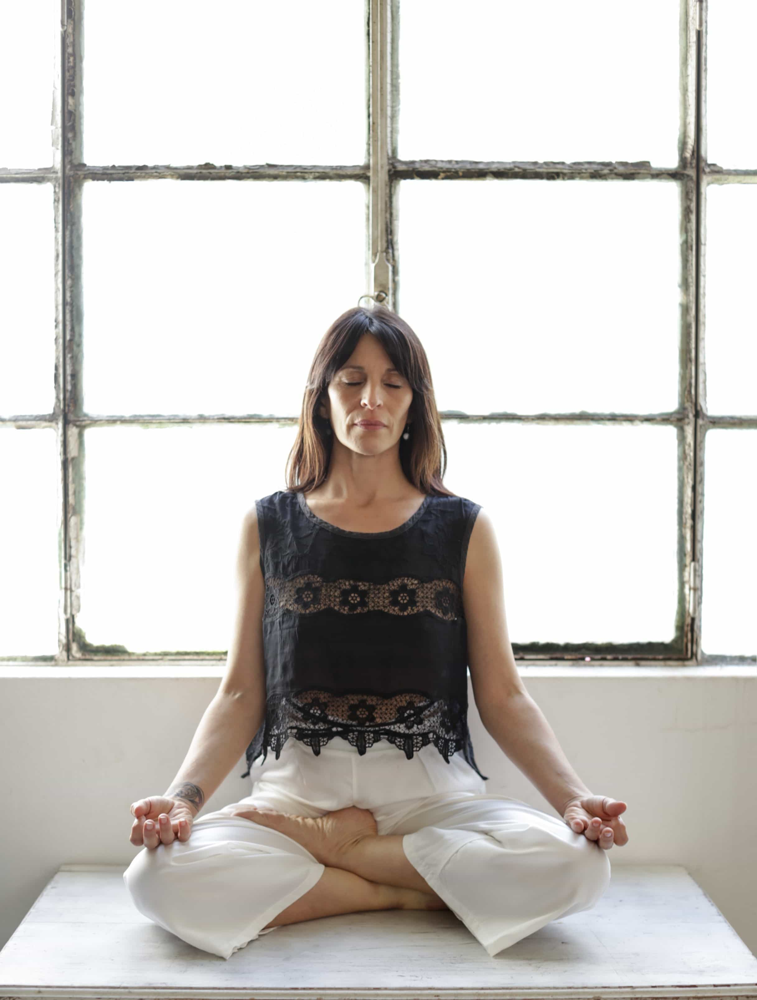

Consultoría 1:1
ARTES TERAPÉUTICAS PARA LA SALUD HOLÍSTICA

¡Hola! Me alegra mucho que estés aquí y que te intereses en los ENCUENTROS INDIVIDUALES conmigo. Este
espacio es para que puedas explorar tus inquietudes, lo que sientes y las
circunstancias que has vivido para comprender mejor tu presente. Es un lugar seguro y respetuoso donde atenderemos tu consulta desde un ENFOQUE INTEGRAL considerando que nuestra salud física, mental, emocional y espiritual están interconectadas para lograr BIENESTAR.
La Consultoría Holística se basa en una colaboración cercana donde te acompaño en el proceso
de AUTOCONOCIMIENTO y descubrir tus propias respuestas para avanzar con el flujo de la vida, sobrepasar obstaculos, conflictos y situaciones difíciles. La frase
“Sin raíces no hay Alas” es muy significativa; nos recuerda la importancia de CONOCER NUESTRO PASADO
para mirarlo con los ojos del amor y honrar nuestros orígenes para poder VOLAR HACIA UN FUTURO MEJOR.
A través de mi guía personalizada, te compartiré conocimientos en Psico-genealogía y el Transgeneracional, donde mediante la exploración de TU ÁRBOL GENEALÓGICO familiar buscaremos como la información heredada puede estar inpactándote ya sea de manera negativa, como positiva CONECTANDOTE CON TUS DONES. Te
brindaré herramientas y otros recursos terapéuticos que te ayudarán a liberarte de patrones o creencias limitantes, encontrar soluciones, claridad y RESTABLECER EL EQUILIBRIO.
¿Te has sentido alguna vez atrapado/a en patrones repetitivos en tu vida? Es posible que no te des
cuenta, pero la información que llevas contigo puede influir en tus PENSAMIENTOS, EMOCIONES Y ACCIONES de manera sorprendente.
Esta herencia transgeneracional se transmite de generación en generación,
moldeando nuestra personalidad, nuestras elecciones y relaciones con los demás.

Imagina poder deshacerte de esas cadenas o nudos invisibles, al hacerlo, no solo podrás tomar conciencia
y evolucionar, sino que también podrás CREAR VÍNCULOS MÁS AUTÉNTICOS y desarrollarte en las áreas de tu
vida que desees prosperar con plenitud, paz y creatividad.
¿Cómo funciona? Es un camino que está diseñado en DOS SESIONES entre vos y yo para acompañarte y sostenerte en tu proceso de reconectar con lo más
esencial y virtuoso de vos mismo/a, facilitando la introspección, el autodescubrimiento y la TRANSFORMACIÓN PERSONAL.
En la primera, tendremos una entrevista para hablar sobre lo
que te preocupa, o deseas trabajar o modificar. En la segunda sesión, profundizaremos en tu razón de
consulta durante al menos dos horas. Después de eso, te dejaré con algunos ejercicios y recursos según tu caso, para que puedas
seguir INTEGRANDO LO APRENDIDO en esta experiencia.
Si decides avanzar, podes optar por retribuirme ambos encuentros juntos y obtener un BENEFICIO, o
hacerlo por separado. Recuerda que los turnos se agendarán una vez que completes la retribución
económica. Si tenes más preguntas o necesitas más información, ¡no dudes en preguntar! Te espero con
amor hacia tu propia historia.
Las sesiones son para vos si:
1. Deseas comprender patrones familiares: entender mejor quien sos y cómo las experiencias pasadas
influyen en tu vida actual para poder superarlas y seguir hacia adelante.
2. Integrar heridas emocionales: reconocer y liberar heridas, patrones o conflictos no resueltos para
promover tu bienestar emocional y la salud mental.
3. Mejorar relaciones: al entender las raíces de ciertos comportamientos o dificultades, podras lograr
fortalecer vínculos, fomentar relaciones más saludables y armoniosas para sentirte con más seguridad y
confianza.
4. Tomar decisiones con mayor claridad: resolver conflictos internos te ayudará a experimentar mayor
claridad
para tomar decisiones importantes en tu vida.
5. Reconocer talentos y recursos familiares: descubrir habilidades, valores o historias de éxito en la
familia puede inspirar y potenciar el crecimiento personal y profesional.
6. Fomentar el crecimiento personal: este proceso favorece el autoconocimiento, la aceptación y el
crecimiento emocional, ayudándote a sentirte más en paz con vos mismo/a y con un sentido de pertenencia.
7. Aprender técnicas de meditación, arteterapia y relajación: descubre prácticas para el manejo del estrés y la
ansiedad de los tiempos actuales, cultivar una mente más serena y centrada para vivir con más consciencia y armonía.
Las sesiones no sustituyen ningún tratamiento clínico, psicoterapéutico ni psiquiátrico de la terapia convencional. Sin embargo, pueden complementar los procesos que estés llevando a cabo, ofreciendo una mirada alternativa a tu problemática o consulta.